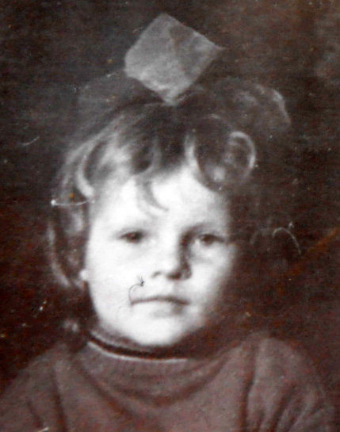
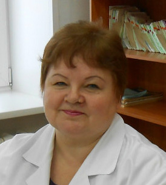
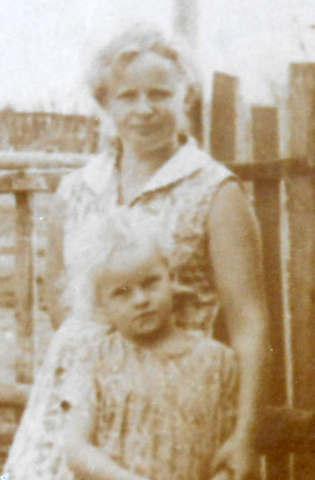
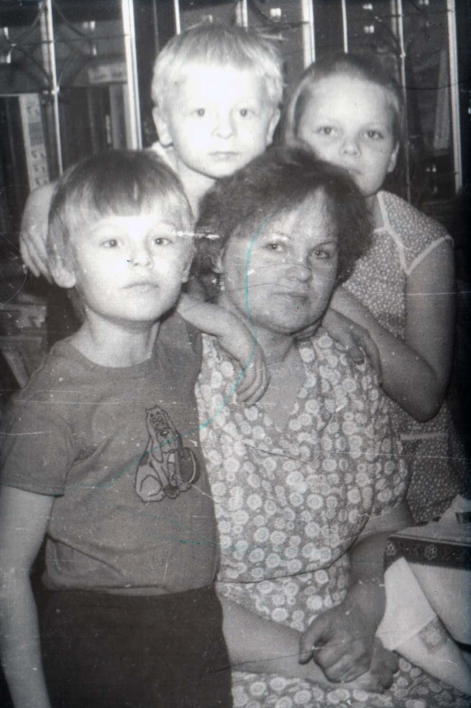

Возраст: 61
Место жительства: г. Черногорск
1976 - окончила Краснополянскую среднюю школу
1979- окончила Медицинское училище, г. Назарово
с 16.04.1979 - заведующая Сережским ФАП (Назаровская ЦРБ)
с 15.10.1979 - акушерка в Краснополянской участковой больнице
с 02.03.1981 - медсестра в Краснополянской участковой больнице
с 01.10.1984 - фельдшер в Краснополянской участковой больнице
с 19.09.1989 - палатная медсестра в кожно-венерологическом диспансере г.Черногорска
с 13.12.1994 - процедурная медсестра в кожно-венерологическом диспансере г.Черногорска
с 02.04.2001 - медсестра процедурного кабинета кожвен отделения в МСЧ "Шахтеров" г. Черногорск
с 20.04.2004 - медсестра кабинета кожно-венерологического поликлинического отделения г. Черногорск
Отец: Шипов Александр Иванович (05.01.1925 - 24.02.1989)
Мать: Шипова (Юдина) Капиталина Павловна (30.10.1930)
Брат: Шипов Александр Александрович (05.01.1952)
Сестра: Верхорубова (Шипова) Татьяна Александровна (01.02.1953)
Муж: Герилович Валерий Леонидович (06.12.1957)
Дочь: Лукьянова (Герилович) Оксана Валерьевна (25.02.1980)
Сын: Герилович Леонид Валерьевич (14.12.1982)
Родилась: 11.01.1960, с. Краснополянск. Отец: Шипов Александр Иванович. Мать: Шипова (Юдина) Капиталина Павловна.
Вышла замуж. Муж: Герилович Валерий Леонидович.
Родилась дочь: Лукьянова (Герилович) Оксана Валерьевна, 25.02.1980. Отец: Герилович Валерий Леонидович.
Родился сын: Герилович Леонид Валерьевич, 14.12.1982, с. Краснополянск. Отец: Герилович Валерий Леонидович.
. . с мамой. С детьми и племянником Алексеем. 11.01.1991. |